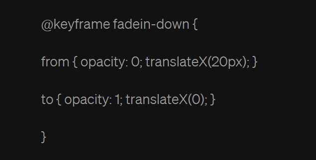
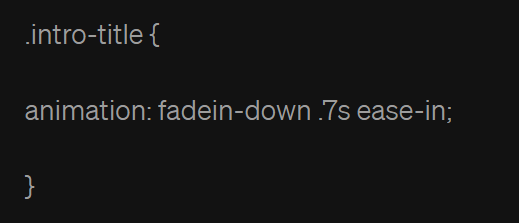

Introduction of CSS
Posted by Julius Ray L. Paampag
What is CSS?
CSS (Cascading Style Sheets) allows you to create great-looking web pages, but how does it work under the hood? This article explains what CSS is, what the basic syntax looks like, and how your browser applies CSS to HTML to style it.
Using CSS, you can control exactly how HTML elements look in the browser, presenting your documents to your users with whatever design and layout you like.
- A document is usually a text file structured using a markup language, most commonly HTML (these are termed HTML documents). You may also come across documents written in other markup languages such as SVG or XML. An HTML document contains a web page's content and specifies its structure.
- Presenting a document to a user means converting it into a form usable by your audience. Browsers like Firefox, Chrome, Safari, and Edge are designed to present documents visually, for example, on a computer screen, projector, mobile device, or printer. In a web context, this is generally referred to as rendering; we provided a simplified description of the process by which a web page is rendered in How browsers load websites.
You can learn more at MDN Web Docs
History of CSS
The invention of HTML by computer scientist Tim Berners-Lee in the early 1990s allowed content to be displayed on websites. However, HTML did not offer styling options. Prior to CSS, some style sheets existed, but they were built into their respective browsers and were proprietary to them. Moreover, the options provided by these style sheets were limited. For instance, the style sheet built into the Mosaic browser offered control only over certain colors and fonts.
CSS was first proposed in 1994, by Norwegian technologist Håkon Wium Lie, who was then working at the European Organization for Nuclear Research (CERN) with Berners-Lee. Two years later the World Wide Web Consortium (W3C) adopted the first standardized specifications for CSS, called CSS1. This version was developed jointly by Lie and Dutch programmer Bert Bos. Microsoft’s Internet Explorer became the first commercial browser to support CSS. In 1998 CSS2 was released, offering improved layout control and the ability to specify how content would appear on different platforms, including handheld devices, print, screen, television, and even Braille. CSS3, rolled out in 2011, added additional functionalities, such as responsive Web design and support for many new font types. It also introduced modules.
CSS modules are used to avoid style conflicts, because, on modules, application of CSS rules is local rather than global by default. Additionally, modules help users reuse code components, because each component can have its own set of stylistic rules. The introduction of modules improved CSS safety by having CSS rules apply locally rather than globally by default. In addition to the core development of CSS, the emergence of CSS frameworks, such as Bootstrap, has significantly simplified responsive Web design by providing reusable pre-styled components, such as navigation bars and buttons.
A Brief History of CSS
CSS, or Cascading Style Sheets, first emerged in the early 1990s as a solution to the growing complexity of web design. The web was in its infancy, and designers were limited in their ability to control the appearance of web pages. Web content was mostly text-based, and HTML (HyperText Markup Language) was the primary tool for structuring web documents.
However, as the demand for more visually appealing websites grew, the need for a dedicated styling language became apparent. This gave birth to the concept of CSS. In 1994, Hakon Wium Lie, a Norwegian web pioneer, and Bert Bos, a Dutch programmer, proposed the first CSS specification. Their vision was to separate content (HTML) from presentation (CSS), thus simplifying web development and making it more flexible. The difference between HTML and CSS lies in their roles: HTML structures web content, while CSS styles and formats that content.
CSS Version History
CSS1 (1996): The first official CSS specification, CSS1, was introduced in 1996. It allowed for basic stylings, such as changing text colors, fonts, and backgrounds, but was limited in terms of layout control.
CSS2 (1998): CSS2, released in 1998, introduced a plethora of new features, including positioning, improved control over layout, and the introduction of media types for different devices.
CSS2.1 (2011): This version focused on clarifying and improving the CSS2 specification, providing greater stability and browser compatibility.
CSS3 (ongoing): CSS3 is not a single monolithic release but a collection of modular specifications introduced gradually. These modules cover various aspects of web design, such as animations, gradients, and flexible box layouts.
CSS4 (in development): CSS4 is the future of CSS, aiming to further enhance web design capabilities, including responsive design, variable fonts, and improved grid systems.
The History of HTML and CSS
HTML and CSS have a symbiotic relationship. While HTML defines the structure and content of a web page, CSS provides the styling and presentation. The combination of the two has allowed for the creation of visually appealing and functional websites.
The introduction of CSS allowed web designers to have more control over the presentation of their HTML documents. This separation of content and style not only improved the quality of web design but also made it easier to maintain and update websites. With the evolution of HTML and CSS, web development became a more streamlined and efficient process.If you're new to web development, starting with an HTML tutorial is a great way to learn the basics of creating web pages.
8 Reasons to Learn CSS
It’s Simple & Elegant
-
CSS stands for Cascading Style Sheets and it is a language used most notably to customize the presentation of HTML elements. It allows users to easily define such attributes as fonts, colors, spacings, positionings, layouts, and much more by way of it’s intuitive selectors.
-
Re-usability and inheritance is built into the syntax of CSS. Whether you’re defining a class or id or you’re just selecting an HTML element, it all seems to flow seamlessly!
-
CSS is simply brilliant. The learning curve of CSS has got to be among the lowest of any programming language. So if you’re an artsy person or if you have a background in design, you should learn CSS.
-
Powerful Features: Shadows, Corner Radius, Image Borders, Transform (Scale, Translate, Rotate)
-
These features may sound very specific, but it allows for rich and immersive experience when appropriately utilized.
-
Shadows: This feature allows users to highlight text or images in a very fancy way. Applying this technique correctly can add a dimensions and perspective to enrich the experience.
-
Corner Radius: This feature can soften the look of harsh edges and make your page look and feel much more seamless. The effect can be used in conjunction with shadows to produce an even more sophisticated look.
-
Corner Radius: This feature can soften the look of harsh edges and make your page look and feel much more seamless. The effect can be used in conjunction with shadows to produce an even more sophisticated look.
-
Image Borders: This allows images to be used as your borders to provide a richer experience when creating containers.
-
Transforms (Scale, Translate, Rotate): This has got to be my favorite addition to CSS3. The ability to transform objects by scaling is essentially changing it’s size by some percentage. Translation is moving it along the x, y, or z axis. Rotation is allowing the object to be rotated along the x, y, or z axis. The introduction of these properties also means you can easily restore the object to it’s initial state. For instance, here is how to restore any transforms to it’s initial state: for scale, set it 100%; for translation along the x, y, and z axis set the property to 0; for rotation along the x, y, z, set it to 0. This is because these transformations now have an origin which run independently from the width, height, z-index, top, left, and other prior CSS properties. This is particularly useful when discussing animations states!
Animations
-
This is another one of my favorite features when it comes to HTML. Other languages have made animations pretty simple like XAML and QML. However, CSS is also able to make animations simple and fun.
-
Animations can be done in CSS3 by transitions or animations. Typically you can define a from or a to state (or a percentage) and utilize the keyframe inside a selector as an animation with some duration.
-
For instance, this keyframe definition below will fade in and scroll down an element.
-
Assuming we have a div class called intro-title, we can apply our animation like this
-
This will apply the animation for .7 seconds and use the ease-in motion function. You can also specify a delay using the animation-delay attribute to allow users a period of time to wait before the animation starts. Negative animation delay values will skip to that point in time for the animation.
-
Not only does this make animations so much easier, it organizes animations into a definition list of properties to be changed from state-to-state. You can, for instance, have multiple animations keyframes running while manipulating different CSS attributes in parallel, each animation having its own delay and motion easing function. Some common attributes may include color, translation (transform), scale (transform), or opacity.
-
Moreover, because of the addition of transforms, the element’s original properties such as translation (on x, y, or z) will not have to alter such properties like height, width, top, or left of the object. You can set the animation so the transformation keeps the final state after the animation, have it rewind, or simply return to it’s initial state.
Once an animation is defined, it can be easily applied and reused.
-
It Influences Other Languages (XAML & QML)
-
Back in the late 90’s, early 2000’s Win Forms was the craze. Back then, I wanted to learn how to be a C++ hacker and build Windows Apps. Then there was MFC, and then was C# Win Forms. But looking back, it was all a joke. OOP was the bee’s knees back in the day and UI was painful, antiquated, and monolithic. I cannot believe I thought it was cool to want to learn these messy things.
-
Let’s fast-forward to 2010 when XAML was introduced. Not only did it utilize a lot of static programming over OOP, it introduced the concept of databinding, styling, and components. Oh yes, most importantly, it used element tags like HTML for UI code. UI development dramatically shifted for the better! There is no doubt that CSS had a tremendous impact on this shift.
-
In the world of QT, which is another realm of C++, it also made a shift to it’s UI in the form of QML which uses a JSON syntax and JavaScript to design the front-end. As a matter of fact, the front-end itself is an entire application which will need to interact with the C++ side of the application!
But there’s more! CSS has also influenced Android’s XML UI development and GTK+ from the Linux world.
-
It’s Easy to Read & Write
-
There are two ways to write CSS, block style and inline. Both ways are convenient to both write and read because the syntax is similar to a dictionary-style seen in JavaScript’s JSON. Block styles are typically great for re-usability and tidiness whereas inline is optimal for over-writing and on-the-spot style changes.
-
CSS allows programmers to conveniently and precisely control the presentation of a page. Reading and troubleshooting CSS is fairly straight forward as well.
-
Diverse Support for Different Devices
-
Everyone knows about responsive design in CSS. This allows for a page’s look to provide the user with a better experience when visiting the page. CSS has native support for tablets and mobile devices. In addition, modern UI Frameworks like Material Design can supplement native CSS to provide even more extensive layout support.
-
This allows a front-end application to target multiple devices and seamlessly change the experience for the user. The dramatic appearance shift may even happen independently of the actual HTML code.
-
It makes you a better coder.
-
Using CSS over the years has been a very interesting journey for me. It has surprised me and shifted my perspective on programming several times towards the more simplistic and practical side.
-
As mentioned earlier, UI coding can be very painful, but CSS seems to make it so easy. In the last 2 decades, I’ve used several technology stacks, but whenever I come back to CSS, I gain a greater appreciation for it.
-
t is a truly powerful language and it makes me a better coder every time I use it. To my disbelief, there are even games written purely in CSS!
-
There’s nothing else like CSS! (and it is here to stay!)
-
Since it’s birth in 1996 by CERN, CSS has retained almost all of it’s level 1 specifications. What’s remarkable is, ever since then, I have not seen anything quite like this technology. And there’s so much more to come. Yet, there are still more specifications to be pushed out. For more information check out the w3.org link I have provided.
https://www.w3.org/Style/CSS/current-work
-
CSS is an excellent tool for creative folks. It is brilliantly expressive and elegantly simple. It’s syntax is intuitive and it’s re-usability is seamless. If you’re waiting for something better, good luck.


Want More?
By doing a lot of practice, you will definitely experience errors and bugs in your code, but don't worry, you will overcome them all!